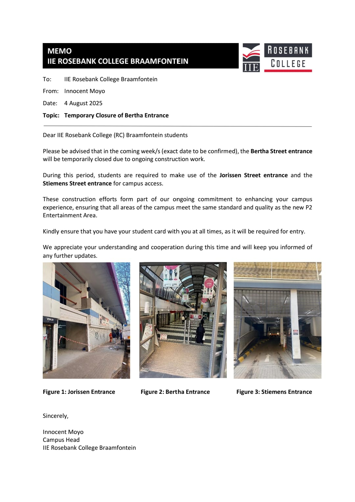
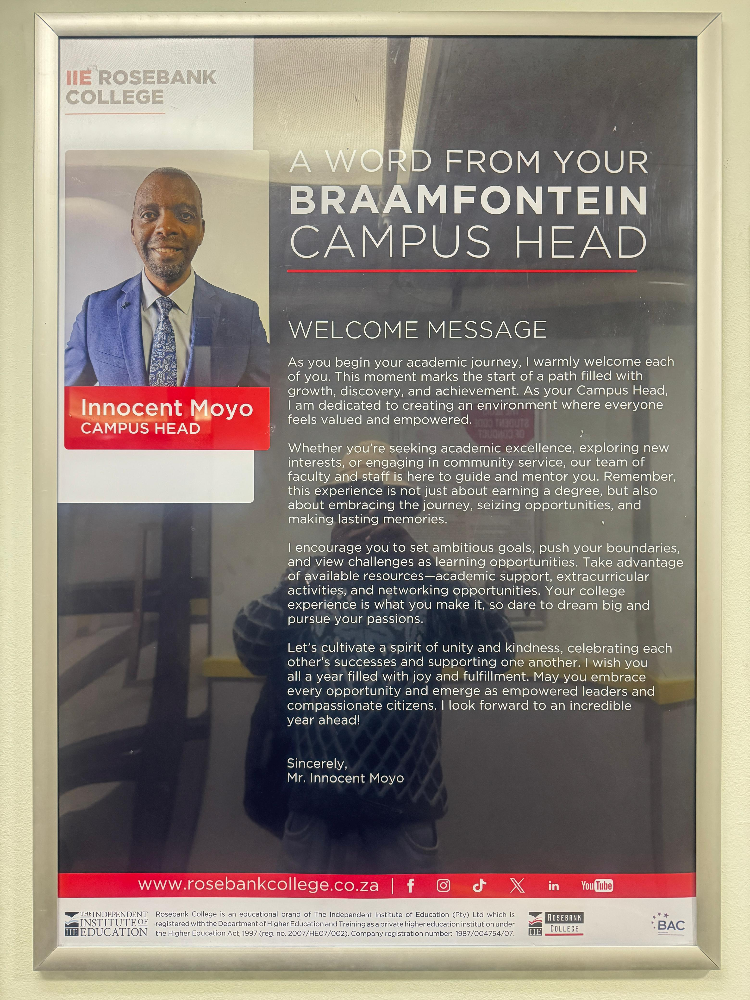

WEEKLY NEWS:
Exciting Renovations Underway
by Rosebank Collage Management, July Rosebank College is currently undergoing major campus renovations to create a more vibrant, modern, and student-friendly environment. The upgrades include new learning spaces, improved facilities, and refreshed common areas designed to enhance both academic and social life. Students can look forward to a fresh, welcoming atmosphere that supports success and creativity.
Welcoming Our New Campus Head
by Mc Donald Shabangu, August We are proud to announce the appointment of our new Campus Head. With a vision to drive innovation and student growth, our new leader brings experience, dedication, and a passion for education. Their focus will be on strengthening student support, academic excellence, and community engagement. Be sure to look out for their welcome address in upcoming events.
Upcoming Events: Netball & Soccer Tournaments
Sports fans, get ready! Rosebank College staff are thrilled to announce the upcoming Netball and Soccer Tournaments. These exciting events are aimed at bringing students together through fitness, teamwork, and friendly competition. Students are encouraged to register, form teams, and participate for a chance to showcase their talent on the field and court. Both tournaments promise a lively atmosphere filled with energy, school spirit, and community bonding. Stay tuned for official dates, match fixtures, and registration details. Don’t miss out — it’s your chance to play hard, cheer loud, and be part of the action!
Leadership & Professional Development
Boitumelo Malinga successfully completed [Certification/Program Name], enhancing their professional skills and bringing new expertise to our classrooms. Their commitment to lifelong learning inspires both colleagues and students alike.